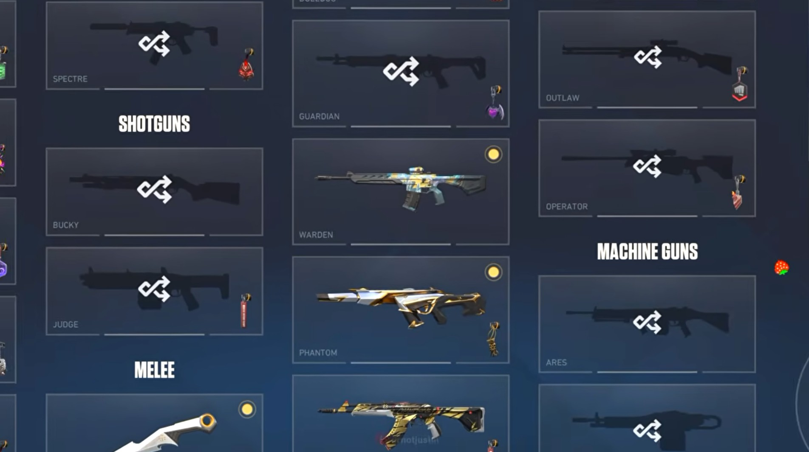

Overview
When the Sydney studio moved from Wargaming to Riot Games, I moved into full-stack development. I joined Valorant's personalisation team and built features across the Unreal Engine game client and the Go backend services that store player personalisation data.
Highlight: Unseen Notification Pips
I led the "unseen notification pips" feature for the Collections screen. It shows players which newly acquired items they haven't looked at yet, which makes the screen easier to use.
- Wrote the technical plan and worked through it with stakeholders.
- Worked with artists and UX designers on how the pips look and behave.
- Programmed the implementation and took it through to release in the live game.

What I Worked On
- Built UI for the Collections screen and other menu systems in Unreal Engine, using Blueprints and C++.
- Built full-stack features for player personalisation data, with Go on the services and Unreal Engine on the client.
- Worked with multidisciplinary teams in several countries to ship features into a live game.